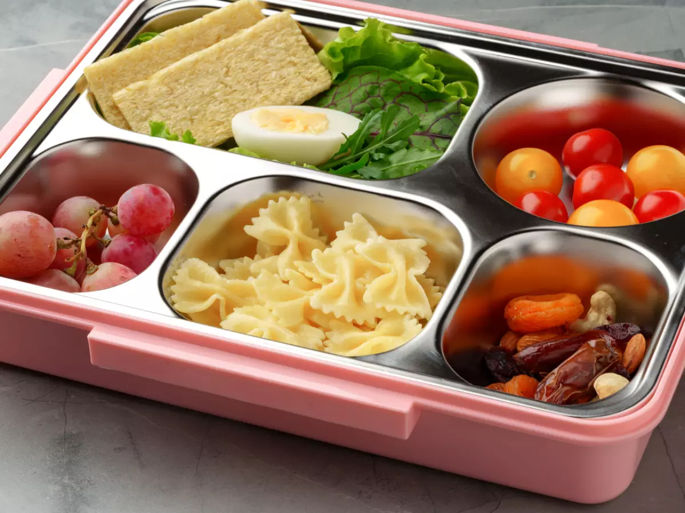

Lanche Divertido: Nutrição e sabor para o recreio.
Ideias práticas para montar lancheiras ricas em vitaminas e sem complicações.
Para ter um lanche escolar saudável a escola deve priorizar por alimentos naturais ou minimamente processados, focando em combinações de proteínas, fibras e carboidratos de boa qualidade.
Podendo evitar também biscoitos recheados e bolinhos prontos, sucos de caixinhas ou refrigerantes, barrinhas comerciais ultrapassadas, entre outras coisas.

Para ter um lanche escolar saudável a escola deve priorizar por alimentos naturais ou minimamente processados, focando em combinações de proteínas, fibras e carboidratos de boa qualidade.
Podendo evitar também biscoitos recheados e bolinhos prontos, sucos de caixinhas ou refrigerantes, barrinhas comerciais ultrapassadas, entre outras coisas